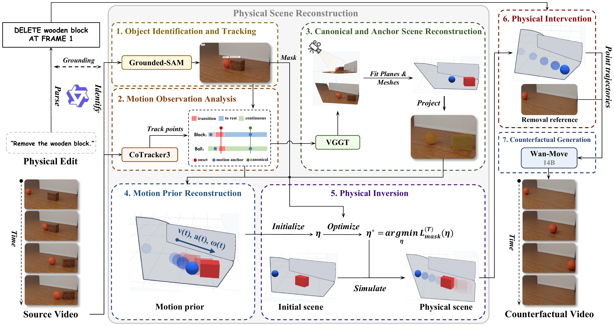

Abstract
Video editing has advanced substantially in recent years, with methods increasingly accounting for the visual consequences of edits, such as changes to shadows and occlusions. However, the physical consequences of edits, including changes to subsequent motion and interactions, remain less explored. We formulate this problem as physical counterfactual video editing (PCVE), which aims to generate a counterfactual video depicting the resulting motion and interactions given a source video, a physical edit, and its execution frame. PCVE is challenging because it requires understanding scene physics and inferring the downstream motion and interactions induced by a physical intervention, while paired factual and counterfactual data and dedicated evaluation metrics are lacking. We introduce VideoPhysEdit, a new training-free pipeline for PCVE in rigid-body scenes. It makes physical reasoning explicit through a novel physical scene reconstruction method that recovers a scene reproducing the observed motion and interactions under simulation, enabling the pipeline to apply physical edits as interventions and use the resulting trajectories to guide counterfactual video generation. We further construct PCVE-RigidBench, a synthetic benchmark with paired source and counterfactual target videos and physical ground truth, and introduce the Physical Edit Score. VideoPhysEdit achieves substantially higher physical edit accuracy than open-source methods and commercial models while maintaining competitive visual fidelity. Its Physical Edit Score is 0.376, the only positive score among the compared methods. Qualitative comparisons on real videos further show that VideoPhysEdit applies to real-world scenes and better depicts the downstream motion and interactions induced by the edits than the compared methods.
Explicit Physical Reasoning Guides Visual Generation
A training-free pipeline for physical counterfactual video editing in rigid-body scenes.

PCVE-RigidBench
20 synthetic rigid-body scenes and 129 editing tasks, with paired source and counterfactual target videos and physical ground truth.
| Method | Physical Edit Accuracy | Visual Fidelity | ||||||
|---|---|---|---|---|---|---|---|---|
| PES ↑ | TE ↓ | Mask IoU ↑ | PSNR ↑ | SSIM ↑ | LPIPS ↓ | CLIP ↑ | FVD ↓ | |
| VACE | −0.042 | 146.26 | 0.273 | 14.06 | 0.728 | 0.447 | 0.795 | 1184.37 |
| Ditto | −0.120 | 149.94 | 0.264 | 22.07 | 0.812 | 0.206 | 0.850 | 551.14 |
| MiniMax H3 | −0.096 | 152.00 | 0.250 | 24.87 | 0.870 | 0.127 | 0.906 | 246.45 |
| Seedance 2.5 | −0.087 | 144.99 | 0.231 | 28.85 | 0.928 | 0.080 | 0.932 | 246.67 |
| No edit | 0.000 | 143.13 | 0.289 | 31.23 | 0.974 | 0.036 | 0.957 | 249.68 |
| VideoPhysEdit | 0.376 | 66.70 | 0.421 | 27.51 | 0.925 | 0.104 | 0.929 | 182.46 |
Comparison with Baselines
Synthetic Videos
Physical edits and their downstream consequences on PCVE-RigidBench.
Real Videos
Physical edits in real-world scenes.
Object Removal
Additional comparisons with VOID on object removal tasks.
BibTeX
Citation details will be added when the paper is available.